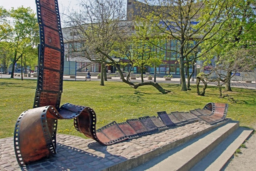
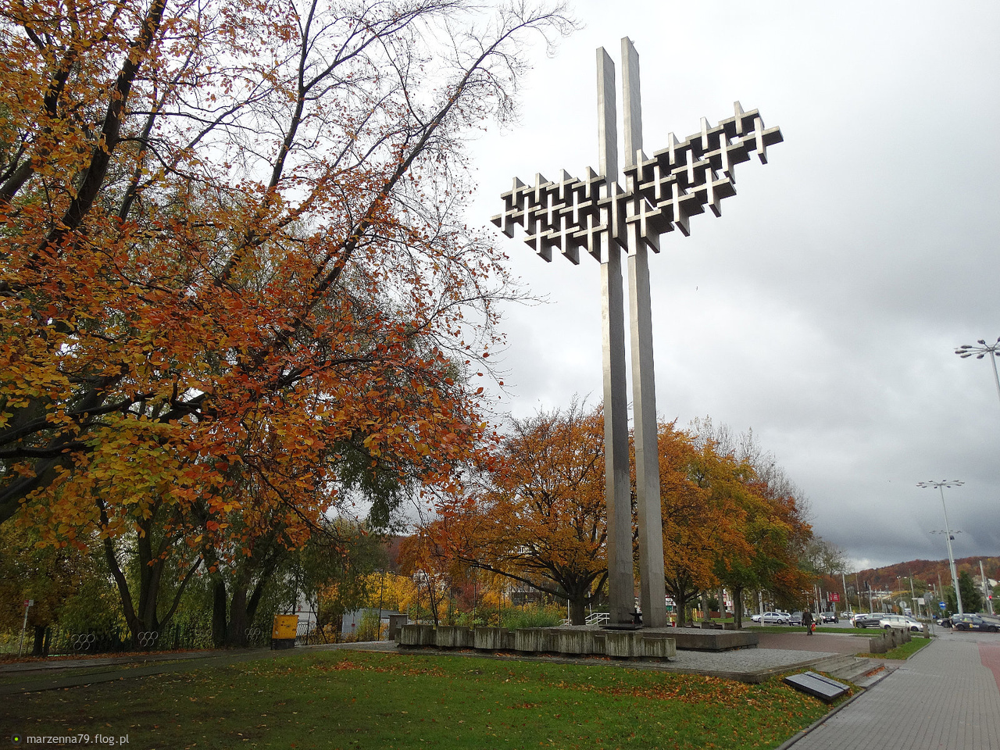
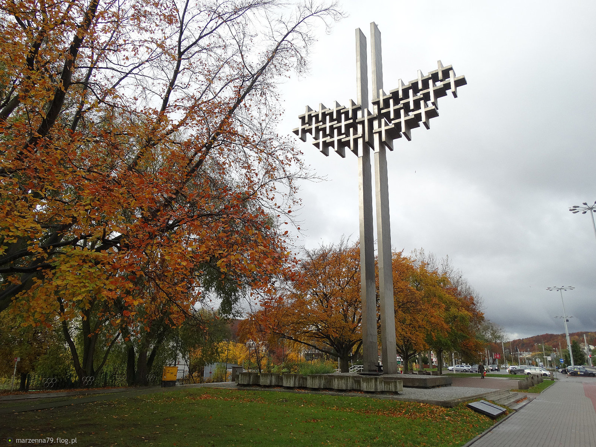

Pomnik Festiwalu Polskich Filmów Fabularnych
W Gdyni co roku organizowany jest Festiwal Polskich Filmów Fabularnych. Prezentowane są na nim polskie filmy powstałe w ciągu roku od poprzedniego festiwalu. Główną nagrodą są „Złote Lwy”. Tradycja ich rozdawania trwa od 1974 roku, kiedy pierwszą nagrodę wygrał Jerzy Hoffman za film „Potop”. Do 1986 roku odbywał się w Gdańsku. Pomnik znajduje się w Parku Rady Europy. Co roku jest do niego dodawana kolejna tabliczka z laureatem konkretnego roku.
Pomniki Ofiar Grudnia 1970
W grudniu 1970 roku odbyły się protesty robotników. Bezpośrednio spowodowane były podwyżką cen artykułów spożywczych. Strajki rozpoczęły się 14 i trwały do 22 grudnia w nadmorskich miastach: Gdyni, Gdańsku, Szczecinie i Elblągu. Uczestniczyli w nim głównie stoczniowcy. Komuniści zdecydowali się stłumić protesty siłą. Używano gazów łzawiących, pałek a nawet czołgów i opancerzonych transporterów. Demonstrantów brutalnie bito i zabijano. Łącznie na samych protestach zginęło 40 osób, a 1165 zostało rannych. Ku ich pamięci w Gdyni wybudowano 2 pomniki. Jeden na alei Józefa Piłsudskiego, a drugi na alei Solidarności.
 
